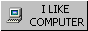
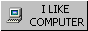
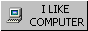

mattcolewilson.com → graphic design

 

mattcolewilson.com → graphic design

Matt Cole Wilson (he/him)
Graphic designer based in Kansas City.
Currently at Shamrock Trading Corporation.
Occasional freelance / pro bono for cool projects.
Likes: Video games, horror fiction, the small web
Dislikes: Fascists, generative AI, cold weather


—
Tumblr: freelance merch design
Bitmap Books: freelance anniversary graphics
Orville Peck: freelance website graphic
Open Mike Eagle: freelance t-shirt design
Geizer font: semi-popular font design
Hypik font: semi-popular font design
—
This is sort of half graphic design portfolio and half personal website. I was coded by hand using only HTML and CSS. It doesn't contain any tracking code or collect any information about you, the visitor. It's also designed to load fast and take up (relatively) little bandwidth and space. These are things that I think are valuable, so I thought I'd point them out. Thanks for visiting!
—
Discord: malyzar
mattcolewilson [at] gmail.com
—
Famiclub
A forum for video games and graphic design.
Skeleton with a Skateboard
A small skateboarding game made in GB Studio.
PSXUI on Tumblr
Showcasing the UI design of PlayStation 1 games.
DiscHeaven on Tumblr
Showcasing the artwork of compact discs, disc-based games, DVDs, and more.
PS2 Games on Steam
Curating PS2 games that are available on Steam.
SNVN
A little electronic music project.
—
Cohost (RIP)
Letterboxd
Record Club
GoodReads
Backloggd
YouTube
Tumblr
Dribbble (Inactive)
Status.Cafe (Inactive)
LinkedIn
Back to top ⤴
Made by human labor. © 2025 All Rights Reserved